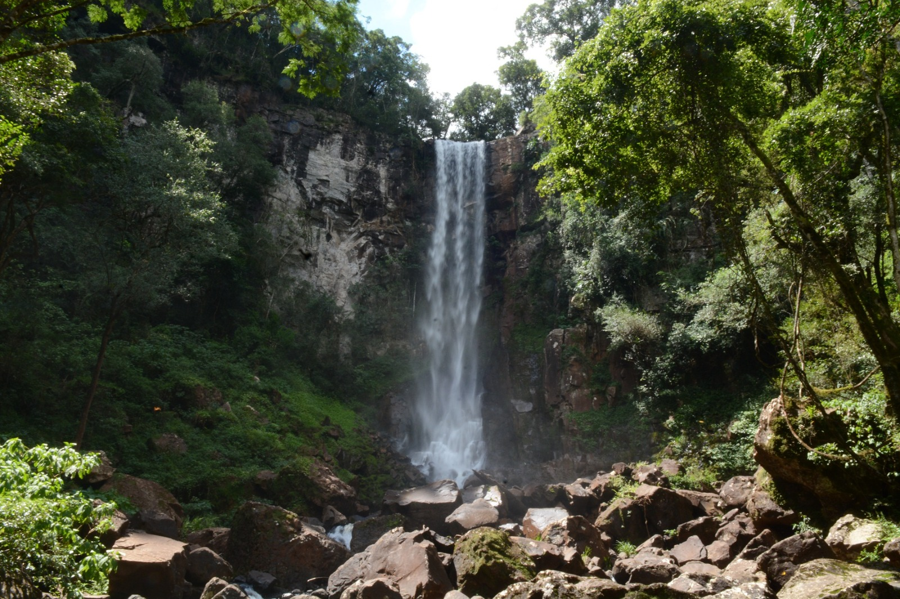

¡Parque Provincial Salto Encantado!
El Parque Provincial Salto Encantado del Valle del Arroyo Cuña Pirú es un área natural protegida de la provincia argentina de Misiones. Se ubica en el municipio de Salto Encantado, ocupa una superficie de 13.227 hectáreas y es atravesado por el arroyo Cuña Pirú(mujer flaca en guaraní) que forma el Salto Encantado. Este parque ofrece un atractivo y muy pintoresco paisaje, rodeado de plantas y sus aguas cristalinas.


El Parque Provincial Salto Encantado conforma uno de los 25 AICAS de la Provincia de Misiones, gracias a su abundante vegetación es el refugio de muchas especies de aves, donde los aficionados eligen año tras año desarrollar su actividad aquí.
Ubicación